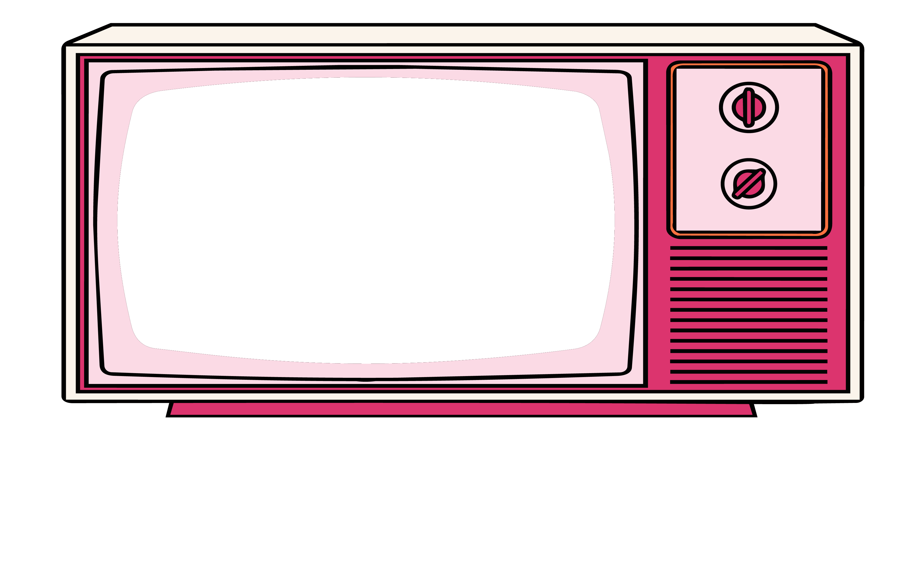

Everything you’re about to see started with one question.
WHY?
Because I’ve always believed the best ideas begin with curiosity.

Hi, I’m PRACHI MITTAL
& Clients
Internships
The Way I See The World
I don’t enjoy designing for the sake of making things look good. I enjoy understanding why something exists, what story it needs to tell, and how design can help people connect with it.
The Process
The Nautilus shell became a metaphor for the way I learn. It grows one chamber at a time, and I believe design works the same way. Every project, experiment, and mistake adds another layer.
The Impact
Today, I help brands and ideas find their voice through research, strategy, storytelling, and thoughtful design. From creating visual identities to advertising campaigns, I build work that is meaningful.
“I don’t think great designers have all the answers. I think they stay curious enough to keep asking better questions.”
Projects


What They Had to Say
Your Turn
You’ve reached the end of my story. I’d love to hear yours.